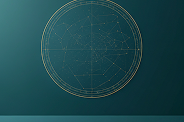

Astra Index


Por Katherine - Astrofísica · 6 días
Cómo encontrar constelaciones en el cielo nocturno
Embárcate en un viaje celestial para descubrir las maravillas de las constelaciones.
Esta guía proporciona técnicas esenciales para identificar constelaciones, desde mapas estelares básicos hasta métodos avanzados de navegación. Aprende a usar las coordenadas celestes, a comprender los cambios estacionales y a usar aplicaciones para cartografiar el cielo en tiempo real. Con instrucciones claras y ayudas visuales, podrás localizar constelaciones como Orión, la Osa Mayor y Casiopea con facilidad.

Esta guía proporciona técnicas esenciales para identificar constelaciones, desde mapas estelares básicos hasta métodos avanzados de navegación. Aprende a usar las coordenadas celestes, a comprender los cambios estacionales y a usar aplicaciones para cartografiar el cielo en tiempo real. Con instrucciones claras y ayudas visuales, podrás localizar constelaciones como Orión, la Osa Mayor y Casiopea con facilidad.
Artículos
Live
Destacados
Explorar
Agregar Topic
Guardar
Cancelar